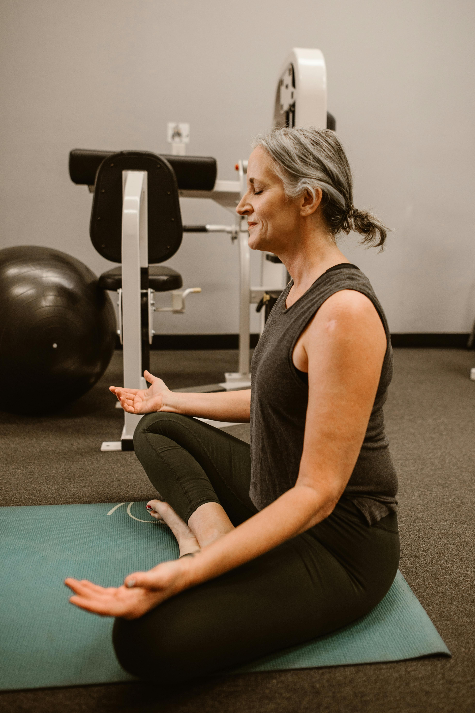
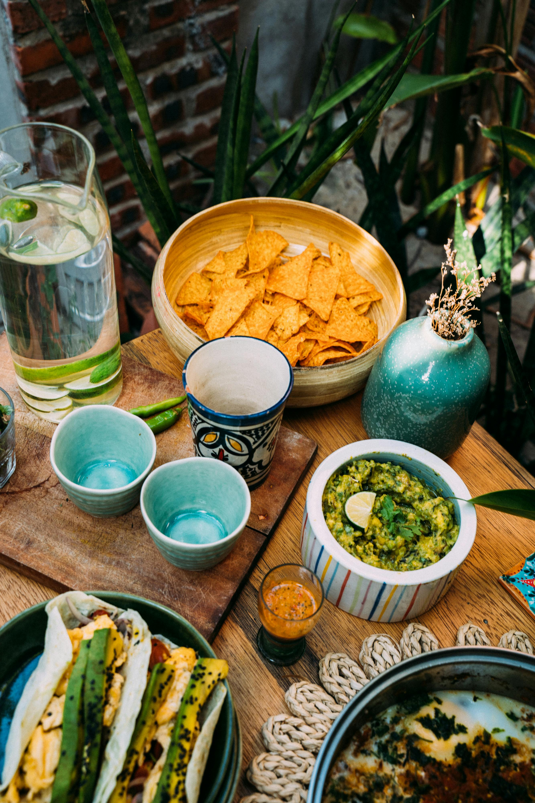
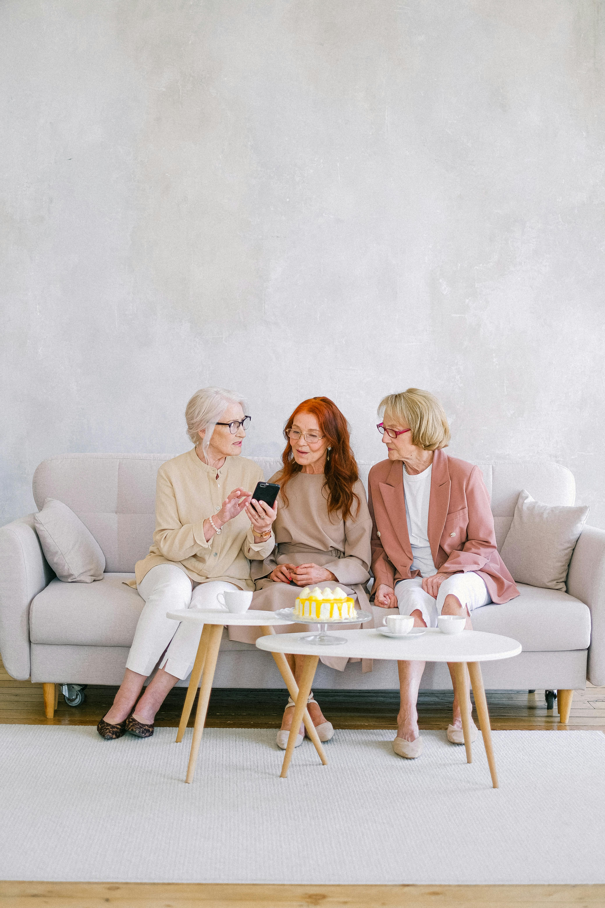

As we age, maintaining good health becomes even more important. A combination of physical activity, proper nutrition, and mental stimulation can help seniors live healthier, happier lives. Below are some tips to help older adults maintain well-being and vitality as they age.
1. Staying Physically Active

Physical activity plays a vital role in healthy aging. Regular exercise helps maintain strength, flexibility, and balance, which reduces the risk of falls and injuries. It also helps with cardiovascular health and boosts energy levels.
Types of Exercise:
Aerobic exercise: Walking, cycling, swimming, or low-impact exercises help improve cardiovascular health and increase stamina.
Strength training: Light weight lifting or resistance exercises help build muscle mass, which naturally declines with age.
Flexibility and balance exercises: Yoga, Pilates, or tai chi help improve flexibility, balance, and prevent falls.
Aim for at least 150 minutes of moderate-intensity exercise per week, along with strength training exercises twice a week.
2. Eating Nutrient-Rich Foods

A balanced and nutrient-rich diet is essential for maintaining good health in later years. Proper nutrition can help manage chronic conditions, strengthen the immune system, and keep the body functioning optimally.
Focus on nutrient-dense foods:
Fruits and vegetables: Aim for a variety of colors on your plate. These are rich in vitamins, minerals, and antioxidants.
Whole grains: Brown rice, quinoa, oats, and whole-wheat bread provide fiber, which is essential for digestive health.
Lean proteins: Include sources like fish, chicken, beans, and legumes to maintain muscle mass.
Healthy fats: Avocados, olive oil, nuts, and seeds provide omega-3 fatty acids, which are good for heart health.
Hydration: Drinking enough water is essential for overall well-being, as dehydration can lead to fatigue and other complications.
Portion control: As metabolism slows down with age, it's important to monitor portion sizes to maintain a healthy weight.
3. Keeping the Brain Active
Mental stimulation is just as important as physical activity when it comes to healthy aging. Engaging in cognitive exercises can help keep the brain sharp and may reduce the risk of dementia and cognitive decline.
Focus on nutrient-dense foods:
Reading: Regular reading of books, magazines, or newspapers keeps the mind engaged.
Puzzles and games: Crossword puzzles, Sudoku, and strategy games help keep the brain active.
Learning new skills: Include sources like fish, chicken, beans, and legumes to maintain muscle mass.
Healthy fats: Avocados, olive oil, nuts, and seeds provide omega-3 fatty acids, which are good for heart health.
Hydration: Drinking enough water is essential for overall well-being, as dehydration can lead to fatigue and other complications.
Portion control: As metabolism slows down with age, it's important to monitor portion sizes to maintain a healthy weight.
4. Prioritizing Sleep and Rest
Quality sleep is essential for overall well-being. As people age, sleep patterns may change, making it important to develop healthy sleep habits. Proper rest improves memory, concentration, and immune function.
Tips for Better Sleep:
Maintain a sleep schedule: Going to bed and waking up at the same time every day helps regulate the body clock.
Create a relaxing bedtime routine: Avoid screens before bed and engage in calming activities like reading or meditation.
Optimize the sleep environment: Keep the bedroom dark, quiet, and at a comfortable temperature.
5. Staying Socially Connected

Social interaction plays a crucial role in mental and emotional health. Engaging with family, friends, and community members helps reduce stress, anxiety, and depression.
Ways to Stay Socially Active:
Join community groups: Participating in clubs, senior centers, or volunteer programs fosters a sense of belonging.
Stay in touch with loved ones: Regular communication through phone calls, video chats, or in-person visits helps maintain strong relationships.
Engage in hobbies: Activities such as gardening, painting, or playing a musical instrument provide both enjoyment and a sense of purpose.
Address sleep disturbances: If experiencing insomnia or frequent waking, consult a doctor for possible solutions.
6. Regular Health Checkups
Routine medical checkups are important for preventing and managing health conditions. Early detection of issues can lead to more effective treatment and a better quality of life.
Health Checkup Essentials:
Routine screenings: Regular tests for blood pressure, cholesterol, diabetes, and other conditions help with early diagnosis.
Vaccinations: Annual flu shots, pneumonia vaccines, and other recommended immunizations help prevent serious illnesses.
Medication management: Following prescribed medication plans and consulting a healthcare provider about any side effects or concerns ensures proper treatment.